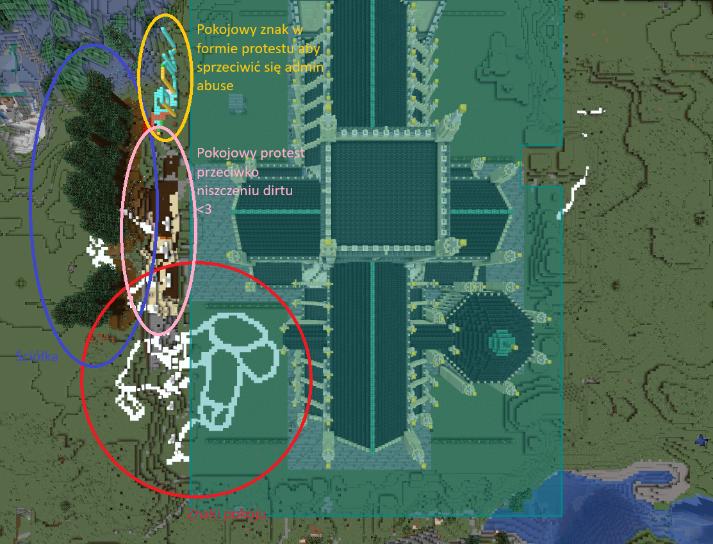
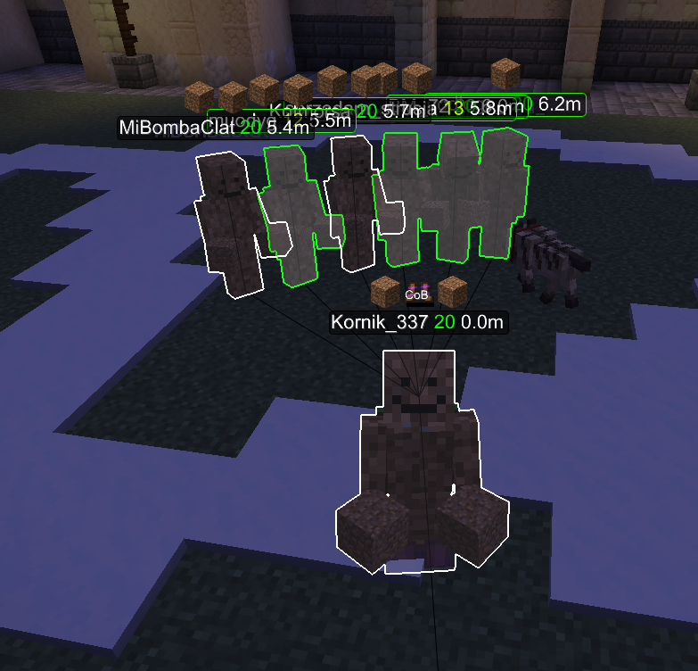
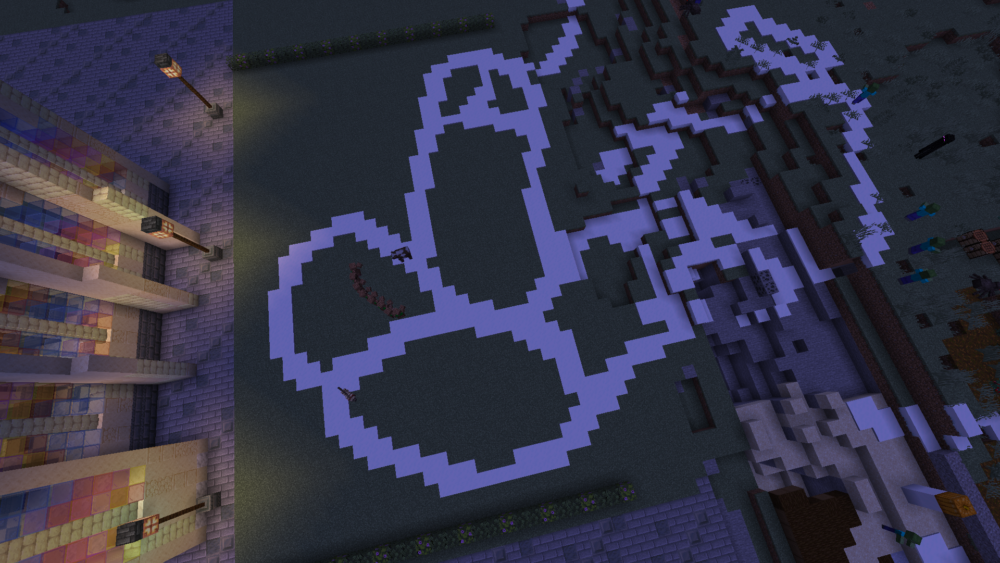
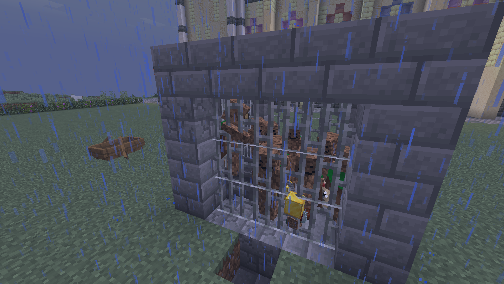
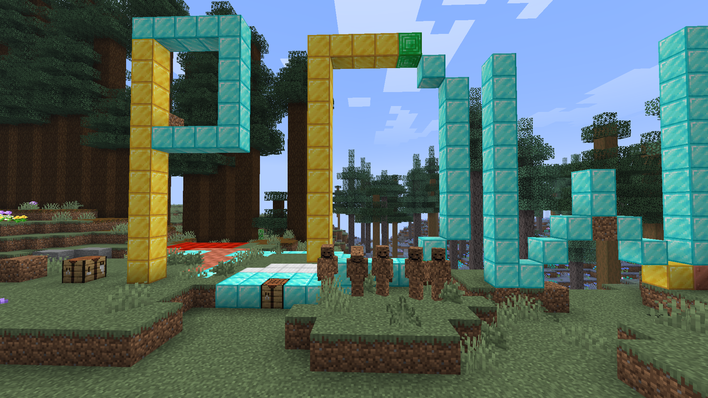

🌿 Sprawa Greenpeace (6.11.2026): Rewolta o Święty Dirt, Śnieżny Znak Pokoju i Monument "PDW"
Kronika dramatycznych wydarzeń pod murami imperialnej bazyliki Spawnu. Jak pokojowa obrona gleby doprowadziła do starcia z Władzą, bezwzględnego usunięcia ekwipunku, aresztowań w ulewnym deszczu i wzniesienia najdroższego monumentu solidarności w historii serwera.
Wszystko rozpoczęło się 6 listopada 2026 roku na bezpośrednim przedpolu imperialnej katedry Spawnu Eurazji. Jeden z najbardziej niezłomnych demonstrantów — samozwańczy kapłan prastarej flory serwera — przystąpił do pokojowego wydobywania i zabezpieczania wierzchniej warstwy gleby (Świętego Dirtu). Twierdził on, że imperialny beton i wszechobecna urbanizacja bezpowrotnie niszczą pradawne runo leśne i duszę serwerowej przyrody.
Reakcja Administracji była natychmiastowa i pozbawiona jakichkolwiek kompromisów. W stronę samotnego aktywisty posypały się liczne, bezwzględne ultimatum oraz groźby sankcji karnych pod rygorem zdrady stanu. Kiedy demonstrant odmówił opuszczenia posterunku i nadal dumnie kopał ziemię, Żelazny Administrator wydał bezprecedensowy rozkaz egzekucyjny: całkowite, bezpowrotne wyczyszczenie całego ekwipunku demonstranta z serwera. W ułamku sekundy dorobek jego życia obrócił się w cyfrowy pył.
Wiadomość o brutalnej czystce majątkowej rozeszła się po Eurazji lotem błyskawicy. Zamiast strachu wywołała jednak falę niespotykanej solidarności. Do akcji wkroczyła legendarna brygada znana jako „Greenpeace” (wśród nich Kornik_337, muody_g, sprzedamstrusia i inni bohaterowie).
Przybyli odziani w mundury z ziemi (mud-skiny) i pod osłoną zaawansowanej aparatury radarowej (Meteor ESP), zaczęli publicznie zrzucać bloki dirtu w geście hołdu dla okradzionego towarzysza. Aby zadośćuczynić okaleczonej ziemi i ochronić ją przed dalszym gniewem administracji, wznieśli potężną Ściółkę Drzew — gęsty, wiecznie zielony las pradawnych świerków zasadzonych wzdłuż murów katedry, tworząc żywy, niezniszczalny zadaszony baldachim flory.
Pragnąc dowieść, że ich ruch opiera się wyłącznie na ideach pacyfizmu i miłości do świata naturalnego, demonstranci sprowadzili na pole manifestacji mistyczne stworzenie: Świętego Bałwana (Śnieżnego Golema). Prowadzony z należytym namaszczeniem przez kapłanów Greenpeace, golem kroczył po murawie, pozostawiając za sobą nieskazitelny trakt chłodnego śniegu.
W ten sposób na ziemiach przylegających do bazyliki wydeptany został monumentalny, dwudzielny Znak Pokoju. Widziany z lotu ptaka (jak udokumentowano na zdjęciach z satelity BlueMap), przybrał on fascynującą formę dwóch okazałych sfer i strzelistego sklepienia — w starożytnych wierzeniach symbolizującego płodność i wieczną siłę odradzającej się natury.
Widok monumentalnego śnieżnego symbolu i zuchwałość leśnego zadaszenia wyprowadziły Zarząd Spawnu z równowagi. Najwyższy Administrator, uznając pokojowy wiec ekologiczny za niedopuszczalny akt buntu przeciwko majestatowi władzy, ogłosił stan wojenny na terenie Eurazji. Siły porządkowe przeprowadziły obławę, w wyniku której trzej czołowi demonstranci zostali bezprawnie ujęci i wtrąceni do lochów więzienia pod Spawnem.
Zamknięci w ciasnej, zimnej celi z kamiennych cegieł, skuci żelaznymi kratami i złotą kłódką tyranii, demonstranci musieli znosić ulewne potoki zacinającego deszczu. Nawet przemoczeni i pozbawieni wolności, stali dumnie ramię w ramię, nie podpisując żadnego cyrografu kapitulacji.
Gdy administracja sądziła, że rzucenie ekologów za kraty ugasiło zarzewie rewolucji, nadeszła odpowiedź, która wstrząsnęła posadami serwera. Wolni bojownicy Greenpeace nie uciekli do lasu. Zgromadzili najpotężniejsze skarbce i przetopili setki unikalnych surowców — dziesiątki bloków litego Diamentu, szczerego Złota oraz szlachetnych Szmaragdów.
Dokładnie naprzeciwko więziennych krat, w pełnym widoku uwięzionych braci i samego spawnu, wznieśli kolosalny, ociekający bogactwem pomnik układający się w legendarne litery: „PDW” (Pozdrowienia Do Więzienia)! Był to szczytowy, najdroższy w dziejach serwera akt demonstracji przeciwko Admin Abuse — nieśmiertelny dowód na to, że braterstwa, wolności słowa i solidarności nie da się zakuć w żadne kajdany!
📸 Materiały Archiwalne & Dowody Zbrodni Administracji
🔍 Kliknij dowolną fotografię, aby otworzyć powiększenie
Satelitarna Mapa Taktyczna Spawnu
Ujęcie z orbity ukazujące strefy działań: zieloną ściółkę leśną, okopy obrony dirtu, mistyczne znaki pokoju udeptane ze śniegu oraz pozycję gigantycznego monumentu PDW.

Zgrupowanie „Dobre Chłopaki”
Bojownicy w mud-skinach (Kornik_337, MiBombaClat i sojusznicy) zrzucają dirt w geście solidarności po bezprawnej konfiskacie mienia przez administratora.

Śnieżny Znak Pokoju Bałwana
Nocne zdjęcie wiekopomnego dzieła udeptanego przez Śnieżnego Golema. Aerodynamiczny, geometryczny kształt symbolizujący płodność ziemi i protest przeciwko niszczeniu przyrody.

Niewinni Demonstranci w Więzieniu
Niezłomni bojownicy przetrzymywani za kamiennymi kratami w strugach deszczu. Kłódka z czystego złota symbolizuje arogancję i bezduszność aparatu władzy.

Monument "PDW" Przeciwko Admin Abuse
Kolosalny napis PDW wzniesiony ze skarbów nacji bezpośrednio przed lochami. Bracia w mud-skinach stoją na straży wiecznej pamięci o wolności i solidarności.